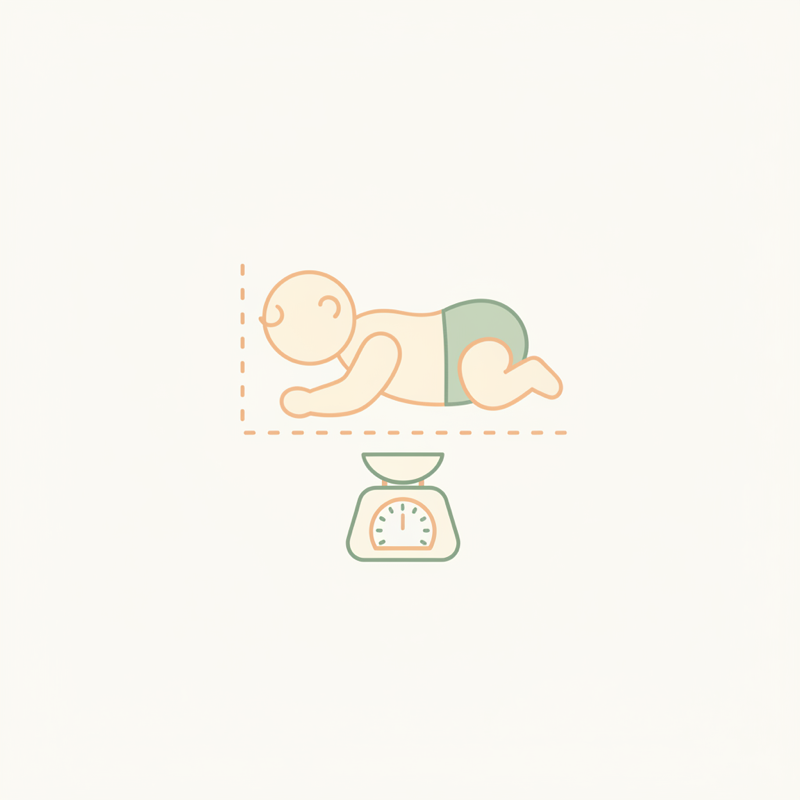

Size Guide
통합 사이즈
가이드
슬리핑백, 속싸개, 의류까지 — 우리 아기에게 딱 맞는 사이즈를 찾아보세요.
3
카테고리
Weight
월령 / 체중 기반
Easy
간편 추천
How to Measure
아기 체형 측정하기
정확한 사이즈 선택을 위해 아기의 키와 몸무게를 먼저 확인해주세요.
정확한 측정이
편안한 착용감의 시작이에요
키 측정
아기를 눕힌 상태에서 머리 꼭대기부터 발끝까지 측정해주세요. 딱딱한 바닥 위에 눕히면 더 정확해요.
몸무게 측정
기저귀를 벗긴 상태에서 측정하는 것이 가장 정확해요. 수유 직후보다는 수유 전에 재는 것을 추천해요.
측정 시기
아기는 빠르게 자라기 때문에 한 달에 한 번 정도 측정해두면 사이즈 교체 시기를 놓치지 않아요.

Sleeping Bag
슬리핑백 사이즈 차트
아기의 키와 몸무게를 기준으로 적정 사이즈를 선택해주세요.
| 사이즈 | 월령 | 키 | 몸무게 | 추천 |
|---|---|---|---|---|
| S | 0~6개월 | ~70cm | ~8kg | 신생아~뒤집기 전 |
| M | 6~18개월 | 70~85cm | 8~12kg | 뒤집기 후~걸음마 |
| L | 18~36개월 | 85~100cm | 12~15kg | 걸음마~유아기 |
사이즈 사이에 있다면 큰 사이즈를 추천해요. 성장이 빠른 시기니까요.
Swaddle
속싸개 사이즈 차트
속싸개는 모로반사 시기에 사용하며, 뒤집기를 시작하면 졸업해요.
| 제품 | 추천 월령 | 추천 체중 | 비고 |
|---|---|---|---|
| 나비잠 속싸개 | 0~4개월 | ~7kg | 모로반사 시기 |
| 스와들 스트랩 | 0~6개월 | ~8kg | 속싸개 위에 추가 고정 |
| 스와들 포켓 | 0~4개월 | ~7kg | 간편 지퍼형 |
속싸개는 너무 꽉 조이면 안 돼요. 가슴 부분에 손가락 2~3개 들어갈 여유를 두세요.
Clothing
의류 사이즈 차트
바디수트, 조거팬츠, 상하세트 등 의류 사이즈를 확인해보세요.
| 사이즈 | 월령 | 키 | 몸무게 | 해당 아이템 |
|---|---|---|---|---|
| 50 | 0~2개월 | ~55cm | ~4kg | 바디수트, 모자 |
| 60 | 2~6개월 | 55~65cm | 4~7kg | 바디수트, 우주복 |
| 70 | 6~12개월 | 65~75cm | 7~10kg | 바디수트, 조거팬츠, 상하세트 |
| 80 | 12~24개월 | 75~85cm | 10~13kg | 조거팬츠, 상하세트 |
Size Finder
몸무게로 사이즈 찾기
아기 몸무게를 입력하면 카테고리별 추천 사이즈를 알려드려요.
Sleeping Bag
—
슬리핑백 추천 사이즈
Swaddle
—
속싸개 사용 추천
Clothing
—
의류 추천 사이즈
FAQ
자주 묻는 질문
사이즈 사이에 있으면 어떤 걸 골라야 하나요?
성장이 빠른 시기이므로 큰 사이즈를 추천해요. 슬리핑백은 약간 여유 있어야 아기가 편안하게 움직일 수 있어요.
슬리핑백 S사이즈는 언제부터 입힐 수 있나요?
체중 3.5kg 이상부터 사용 가능해요. 보통 출생 후 바로 사용하시는 분들이 많아요.
속싸개는 언제 졸업해야 하나요?
뒤집기를 시작하면 속싸개를 졸업하고 슬리핑백으로 전환해주세요. 보통 3~4개월 전후예요.
의류 사이즈가 다른 브랜드와 다른가요?
썬데이허그는 밤부 소재 특성상 세탁 후 약간 줄어들 수 있어요. 여유 있는 사이즈를 추천해요.
선물용으로 사이즈를 모를 때는 어떤 걸 고르나요?
슬리핑백은 M 사이즈가 가장 범용적이에요. 의류는 70 사이즈가 6~12개월에 해당하여 활용도가 높아요.